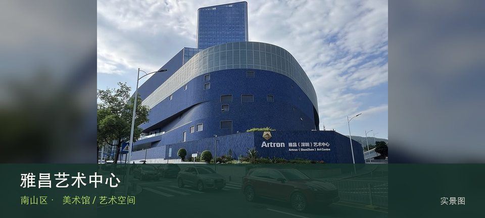

适合谁
适合愿意阅读展讯并细看少量作品的人；只想寻找固定常设展或网红机位者应先降低预期。

SHENZHEN GUIDE · 092
深云路 · 美术馆 / 艺术空间
雅昌艺术中心位于深云路雅昌大厦，从艺术印刷、图像数据库到展览空间呈现艺术出版产业链，适合关注作品如何被复制、整理和传播。这里不是只有一个打卡点：艺术印刷工艺提供主要线索，艺术图书与数据库补足另一层现场关系。这里的价值随展期变化，应把艺术印刷工艺与艺术图书与数据库放在同一次观看中，辨认作品、空间和所在街区的关系。先查当期展讯与入口，不把官方名录中的地址等同于随时可入场。
WHY GO
适合愿意阅读展讯并细看少量作品的人；只想寻找固定常设展或网红机位者应先降低预期。
首次游览雅昌艺术中心不求走全，先完成艺术印刷工艺这一项观察，再根据同行者体力选择艺术图书与数据库，并保留原路退出方案。
公共交通先到深云路雅昌大厦片区，再以雅昌艺术中心公开参观入口为终点；校园、园区或预约型场馆须同时核对门禁与开放日。
自驾优先使用雅昌艺术中心所属建筑、园区或邻近正规公共停车场；预约时一并确认车牌登记、门岗和社会车辆准入规则。
全年可安排，炎热和降雨日更友好；展期、开幕活动与换展闭馆比季节本身更影响体验。